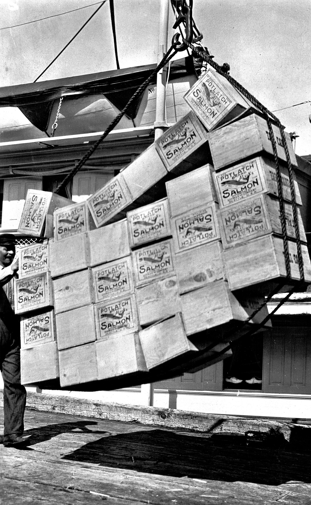
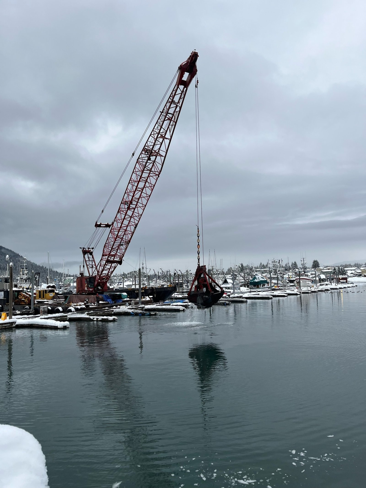

Directory / Petersburg, AK
Petersburg AK tides
High and low tides for the coming week from NOAA station 9451439 (56.815, -132.957). Times are local (LST/LDT). Heights are feet above Mean Lower Low Water (MLLW).
Harbor then & now
Historic

Current

Official NOAA predictions Station home Printable tide calendar View on Windy
Port Sponsor — Petersburg, AK
Top placement on this page for fuel docks, marinas, marine suppliers, electronics installers, and local marine businesses.
$25–$50 / month
Friday, November 13, 2026
| Tide | Time (local) | Height (MLLW) |
|---|---|---|
| High | 3:25 AM | 13.7 ft |
| Low | 8:56 AM | 5.3 ft |
| High | 2:46 PM | 15.6 ft |
| Low | 9:39 PM | 0.9 ft |
Saturday, November 14, 2026
| Tide | Time (local) | Height (MLLW) |
|---|---|---|
| High | 4:08 AM | 13.0 ft |
| Low | 9:37 AM | 5.9 ft |
| High | 3:26 PM | 14.6 ft |
| Low | 10:22 PM | 1.7 ft |
Sunday, November 15, 2026
| Tide | Time (local) | Height (MLLW) |
|---|---|---|
| High | 4:58 AM | 12.4 ft |
| Low | 10:28 AM | 6.4 ft |
| High | 4:14 PM | 13.6 ft |
| Low | 11:13 PM | 2.5 ft |
Monday, November 16, 2026
| Tide | Time (local) | Height (MLLW) |
|---|---|---|
| High | 5:56 AM | 12.1 ft |
| Low | 11:35 AM | 6.7 ft |
| High | 5:14 PM | 12.6 ft |
Tuesday, November 17, 2026
| Tide | Time (local) | Height (MLLW) |
|---|---|---|
| Low | 12:11 AM | 3.0 ft |
| High | 6:59 AM | 12.3 ft |
| Low | 12:58 PM | 6.4 ft |
| High | 6:30 PM | 12.0 ft |
Wednesday, November 18, 2026
| Tide | Time (local) | Height (MLLW) |
|---|---|---|
| Low | 1:14 AM | 3.3 ft |
| High | 7:57 AM | 13.0 ft |
| Low | 2:14 PM | 5.4 ft |
| High | 7:49 PM | 12.0 ft |
Thursday, November 19, 2026
| Tide | Time (local) | Height (MLLW) |
|---|---|---|
| Low | 2:14 AM | 3.4 ft |
| High | 8:46 AM | 14.0 ft |
| Low | 3:15 PM | 3.9 ft |
| High | 9:00 PM | 12.5 ft |
Friday, November 20, 2026
| Tide | Time (local) | Height (MLLW) |
|---|---|---|
| Low | 3:08 AM | 3.3 ft |
| High | 9:28 AM | 15.2 ft |
| Low | 4:05 PM | 2.1 ft |
| High | 10:00 PM | 13.3 ft |
Marine weather & cameras
NWS marine forecast — Frederick Sound (PKZ034)
Issued 249 PM AKST Thu Nov 12 2026. Snapshot fetched 2026-11-12 21:09 AKST from NWS text product. Official zone forecast · Raw text
- .TONIGHT...NE wind 15 kt increasing to 20 kt late. Seas 4 ft.
- .FRI...NE wind 15 kt. Seas 3 ft. Rain in the afternoon.
- .FRI NIGHT...E wind 15 kt. Seas 3 ft. Rain late.
- .SAT...E wind 15 kt. Seas 3 ft.
- .SAT NIGHT...E wind 20 kt. Gusts to 40 kt. Seas 4 ft.
- .SUN...E wind 25 kt. Seas 5 ft.
- .MON...SE wind 20 kt. Seas 4 ft.
- .TUE...SE wind 20 kt. Seas 4 ft.
Nearby NDBC observation — Cape Decision, AK (CDEA2) — nearest active coastal NDBC station for SE approaches near Petersburg
wind 40°, 8 kt, gust 18 kt, air 46°F, 993.9 hPa
Observation time 2026-11-12 20:22 AKST (converted to AKST). Attribution: NOAA NDBC station CDEA2. Snapshot fetched 2026-11-12 21:09 AKST.
Harbor webcams
- FAA WeatherCams — Petersburg James A. Johnson Airport (PAPG) (free public link; not embedded)
No dedicated city harbor webcam verified this pass. We link only; we do not rehost images. FAA also notes a weather camera for this airport at weathercams.faa.gov.
Local marine & shore directory
Verified public listings only. Basic listings are free. Featured listings ($10/mo or $100/yr) get top placement, a highlight, logo, and short description. List your business free · Get featured
Marine services
Moorage & marinas
Fuel docks
Shipyards & haul-outs
Boat repair & mechanics
Marine suppliers & chandleries
No verified listing yet — list your business free.
Electronics sales & installation
Welding & fabrication
No verified listing yet — list your business free.
Canvas & upholstery
No verified listing yet — list your business free.
Surveyors
No verified listing yet — list your business free.
Towing & salvage
No verified listing yet — list your business free.
Ice & bait
No verified listing yet — list your business free.
Fishing charters
Ashore for boaters
Groceries & provisioning
Hardware
Liquor stores
Laundromats
Showers
Lodging
Restaurants
No verified listing yet — list your business free.
Medical clinics
Pharmacies
No verified listing yet — list your business free.
Post office & shipping
Airport & floatplane
Propane
No verified listing yet — list your business free.
Auto & truck rental
No verified listing yet — list your business free.
Local news — Petersburg, AK
Plain links to local outlets. Always check the source for the latest. Local news partners welcome.
Free weekly tides & marine weather
Get a short email for your port. We do not sell your email. See our privacy policy.
Mailing list powered by Buttondown.
Boating gear on Amazon
As an Amazon Associate I earn from qualifying purchases.
Helpful search links for common gear. Prices and availability are on Amazon.
Other Alaska ports
- Cordova tides
- Kenai tides
- Whittier tides
- Valdez tides
- Kodiak tides
- Dutch Harbor tides
- Unalaska tides
- Homer tides
All Pacific Tides ports · Harbor, fuel & haul-out directory · Printable Petersburg tide calendar
Sources
- NOAA CO-OPS station 9451439 — Petersburg
- Predictions API:
api.tidesandcurrents.noaa.gov/api/prod/datagetter - Directory listings verified from public business/government pages listed in
data/businesses.csv.